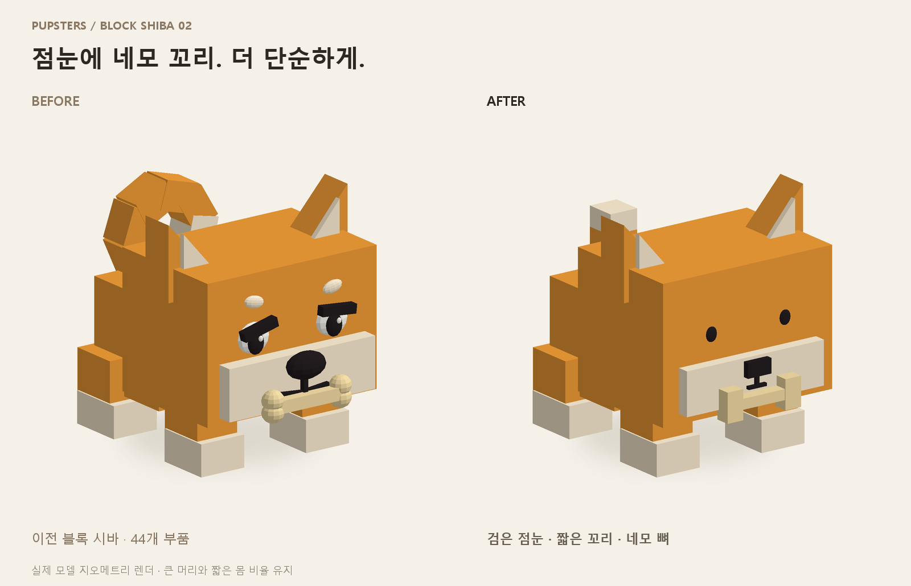

DOT EYES / SHORT TAIL / SQUARE BONE
점눈 블록 시바
드래그로 회전 · 휠로 확대 · 방향키와 +/−도 사용 가능
PUPSTERS / BLOCK SHIBA / 02
검은 점눈과 작은 네모 코로 더 단순하게.
큰 머리와 짧은 몸의 비율은 그대로예요.
드래그로 회전 · 휠로 확대 · 방향키와 +/−도 사용 가능

Studio의 Explorer에서 Workspace → 우클릭 → Insert From File…로 Shiba-Block.rbxmx를 넣으세요. 각 부품은 고정되어 있어 바로 모양을 확인할 수 있어요.
입에 뼈를 문 대기 자세 모델입니다. 공격 애니메이션은 포함하지 않습니다. 실제 메시 렌더와 파일 구조를 검사했으며 Roblox Studio 내부 실행은 아직 확인하지 못했습니다.
적용 안내 · 검사 기록